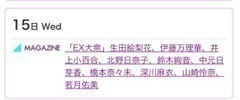
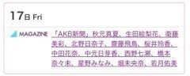
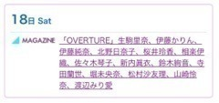
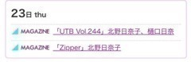
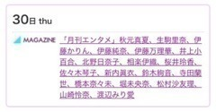
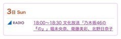
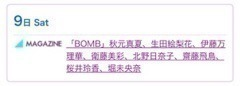
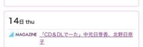
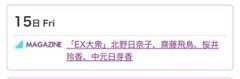
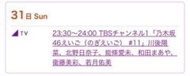

2016/0630Thuキャップの閉め忘れ
みなさまこんばんは！
北野日奈子です(｡・・｡)！
まいちゅんのラジオの
モーニングコールコーナー
ちゃんと出られました！！！
約束通り、ワンコール目ででれました！
先週からの一週間の
心残りや悩みが１つ
解消されて気持ちいい朝でした♪笑
今回、こうやって
また私に電話をかけてくれた
まいちゅんとスタッフさん！
ありがとうございました！
電話がかかってくるまでの時間
ほんと緊張した～！笑
リスナーの皆さん！
ラジオを聞いてくださってありがとうございました！

運命共同体
今日は1日収録でした！！！
新曲の振り入れもしました！！！
はやく皆さんにみてもらいたいな～♪
毎日ほんとにたのしくて
ずーっと笑ってます！！！
皆さんにも楽しんでもらえるように
いっぱい笑顔になってもらえるように
がんばります！！！
お知らせ！
6月





7月






明日から7月ですね！！！
はやい！あっという間！
今年も半年きりました！！！
わー！おそろしい！
時間がー
はやいよー
経つのがー
はやいよー
一瞬一瞬を大切に過ごすぞ！！！
最近のみなさんのオススメの
音楽ありますかー？
それでは今日はこのへんで！
はやく明日になってスイカたべるぞ～
2016/06/30 23:59
コメント(424)
マジすか学園12345観てた？
観てたら感想教えて
観てたら感想教えて
こんにちわっほい！！
まいちゅん〜〜！！！
僕は今週も寝落ちしました笑
いつかきかねば！！！
ㅤ『北野日奈子、応援しています！』
まいちゅん〜〜！！！
僕は今週も寝落ちしました笑
いつかきかねば！！！
ㅤ『北野日奈子、応援しています！』
きいちゃんは夏が似合うね(//∇//)
こんにちは
ひなせれやってー！
頑張れ！
頑張れ！
きいちゃんおつかれさまー！
ひなこと一緒にいる人ってほんと幸せになれそ〜
やっぱ元気な子っていいよね！！！
ブログ更新ありがとう！
きいちゃーん
ブログ更新お疲れ様！
ラジオ聞いてたよ♪笑
ちゃんと出てたし可愛かった✨✨
ちゃんと出てたし可愛かった✨✨
毎日更新ありがと！
がおー！
がおー！
きいちゃん大好きだー！
裸足でSummer楽しみ♪
裸足でSummer楽しみ♪
7月早いねー
きいちゃんひなセレ！！！！笑笑笑
ラジオ聞いてたよー！
最近のおすすめはBLUE ENCOUNTかな（・ω・`）
最近のおすすめはBLUE ENCOUNTかな（・ω・`）
きーちゃん毎日更新本当に助かってます！！！！！！！
きいちゃーん
もう7月早いね
もう7月早いね
スイカ美味しいよねー、15まいめもがんば！
きぃちゃん、まいちゅんの電話出れて良かったね
きいちゃんのオススメの夏楽曲はなんですか？？
ひなこアイシテル
きいちゃんハロー
とうとう7月！
きいちゃんも僕の誕生月だよ～♪ヽ(´▽｀)/
暑さに負けずがんばろうね！！
とうとう7月！
きいちゃんも僕の誕生月だよ～♪ヽ(´▽｀)/
暑さに負けずがんばろうね！！
ブログの題名いつも深いよね(^^)
不等号と掛けたのかな？？？ずっと応援してるよ(^o^)
握手会いけたらいきます！！！
不等号と掛けたのかな？？？ずっと応援してるよ(^o^)
握手会いけたらいきます！！！
keytalkのMATURIBAYASIって歌が夏ぽくってめちゃくちゃいいですよー
バンド系は好きなのかわからないけど笑
バンド系は好きなのかわからないけど笑
きいちゃんブログ更新ありがとう！
裸足のSummer楽しみ〜！
ジャケ写めっちゃ可愛いね
裸足のSummer楽しみ〜！
ジャケ写めっちゃ可愛いね
裸足のsummer楽しみ！
きいちゃんもう七月入ってるよあとちょっとで20歳じゃん！！
最近好きな曲は欅坂46の世界には愛しかないかな
きいちゃんもう七月入ってるよあとちょっとで20歳じゃん！！
最近好きな曲は欅坂46の世界には愛しかないかな
きいちゃん、どうもmizu-mizuです。
ブログ更新ありがとうございますo(^▽^)o
握手会たくさん完売してますね
きいちゃんはとても頑張っていて
自分はきいちゃんからたくさんの元気を貰ってます。
Zip見ました。
裸足でSummer
ジャケット写真とても可愛いです（≧∇≦）／
早くフルで聴きたいです（≧∇≦）／
またコメントします。
ブログ更新ありがとうございますo(^▽^)o
握手会たくさん完売してますね
きいちゃんはとても頑張っていて
自分はきいちゃんからたくさんの元気を貰ってます。
Zip見ました。
裸足でSummer
ジャケット写真とても可愛いです（≧∇≦）／
早くフルで聴きたいです（≧∇≦）／
またコメントします。
ジャケ写公開されたね～
裸足のsummer、楽しみにしてるで！
裸足のsummer、楽しみにしてるで！
ちゃんと出れて良かったね（笑）
オススメの音楽ねー。
結構90年代の歌とかよく聞くよ！
TRFとかB’zとかロックも聞くしとりあえず90年代の歌はメロディーが本当に好みが合うのが多くて良い！
聞いてみて！
こんにちは。
もう一回出ないってのも面白かったかもね。
でも楽しかったよ。
残り半年…。
早いな～。
とりあえず早く新曲聴きたいよー！
もう一回出ないってのも面白かったかもね。
でも楽しかったよ。
残り半年…。
早いな～。
とりあえず早く新曲聴きたいよー！
可愛いー！！！
おすすめの音楽はOne Ok Rockさんのheartacheだよ
るろうに剣心 主题曲です
とても素敵の歌
るろうに剣心 主题曲です
とても素敵の歌
きいちゃんブログ更新ありがとー！
まいちゅんのラジオ聴いてよー
きいちゃんが電話に出るかこっちもドキドキしちゃった笑
15枚目のジャケット写真にきいちゃんが選抜メンバーとしていて、すごく嬉しくなった‼️
早く新曲聴きたい‼️
またブログ更新楽しみにしてます‼️
これから、10月29日の個握も申し込みしてくるねー
まいちゅんのラジオ聴いてよー
きいちゃんが電話に出るかこっちもドキドキしちゃった笑
15枚目のジャケット写真にきいちゃんが選抜メンバーとしていて、すごく嬉しくなった‼️
早く新曲聴きたい‼️
またブログ更新楽しみにしてます‼️
これから、10月29日の個握も申し込みしてくるねー
お日奈様〜、こんにちは
今日から7月だからかな、アッツイぞ〜(T . T)
これからお日奈様は、忙しくなりそうだからくれぐれも、体調崩さないよう気をつけて下さいね(T . T)
アイスやスイカをたんと食べて乗り切って下さいね(^ ^)
また名古屋の握手会で、逢えるのを待ってますね(^^)／~~~
では、大〜好きなお日奈様(((o(*ﾟ▽ﾟ*)o)))
笑顔で頑張って行きましょう(^^)／~~~
今日から7月だからかな、アッツイぞ〜(T . T)
これからお日奈様は、忙しくなりそうだからくれぐれも、体調崩さないよう気をつけて下さいね(T . T)
アイスやスイカをたんと食べて乗り切って下さいね(^ ^)
また名古屋の握手会で、逢えるのを待ってますね(^^)／~~~
では、大〜好きなお日奈様(((o(*ﾟ▽ﾟ*)o)))
笑顔で頑張って行きましょう(^^)／~~~
きいちゃんブログありがとう！！！
スイカ食べれたかな？
スイカ食べれたかな？
きいちゃんはソロ曲とかやってみたいですか？
お疲れ様です！！！
BACK LIFTってバンドがおすすめです！
全曲かっこいいけど、morningって曲がメロディとかも聴きやすいし歌詞も素晴らしくてすごい元気が出るよ！おすすめ！！！！！
BACK LIFTってバンドがおすすめです！
全曲かっこいいけど、morningって曲がメロディとかも聴きやすいし歌詞も素晴らしくてすごい元気が出るよ！おすすめ！！！！！
きいちゃんお疲れ様！
みさ姉もスイカ食べたいって言ってたよ！笑
みさ姉もスイカ食べたいって言ってたよ！笑
運命共同体の写真素晴らしい！！！
最近ASIAN KUNG FU GENERATIONの江ノ島エスカーって曲にはまってるよ！
きいてみて！
きいてみて！
７月スタートのふさわしい
天気だよねーー！！
ん。。その写真のきいちゃんー！！
好き！なんか、いいかんじ！！！
運命共同体〜〜〜♪
おすすめするわけでもないけど、
最近、洋楽ハマってる！！
それと、洋画もー！ちなみに今ね、
洋画を見ようとしてるの〜笑
さぁ、見よう！と思ったら、
きいちゃんのブログが反映された笑
洋楽は、今はまだ、有名な方々のを
いろんなの聴いてるなーー。
洋楽きいてると、自分だけの世界に入りやすい。
あと、半年！！！！！！
がんばろうねーっっ！
今年は僕は｢挑戦する｣年なんだー！
まだまだ目標があるぜぁ！
がんばるぞー！！！！！！
きいちゃんに負けないぞぁ！
よっしゃー！７月もがんばろ！
今月もよろしくお願いしますっ♪
ㅤ『北野日奈子、応援しています！』
天気だよねーー！！
ん。。その写真のきいちゃんー！！
好き！なんか、いいかんじ！！！
運命共同体〜〜〜♪
おすすめするわけでもないけど、
最近、洋楽ハマってる！！
それと、洋画もー！ちなみに今ね、
洋画を見ようとしてるの〜笑
さぁ、見よう！と思ったら、
きいちゃんのブログが反映された笑
洋楽は、今はまだ、有名な方々のを
いろんなの聴いてるなーー。
洋楽きいてると、自分だけの世界に入りやすい。
あと、半年！！！！！！
がんばろうねーっっ！
今年は僕は｢挑戦する｣年なんだー！
まだまだ目標があるぜぁ！
がんばるぞー！！！！！！
きいちゃんに負けないぞぁ！
よっしゃー！７月もがんばろ！
今月もよろしくお願いしますっ♪
ㅤ『北野日奈子、応援しています！』
まいちゅんはちゃんとかけてきてくれたんだ、良かったね 3時15分には寝落ちしちゃったm(__)m 15thで片想い以来のきいちゃんを見るのが楽しみですo(^o^)o
UNISON SQUARE GARDENがオススメだよ！
一つの曲に絞るのは難しいけどオススメはUNISON SQUARE GARDENだよー！！
一つの曲に絞るのは難しいけどオススメはUNISON SQUARE GARDENだよー！！
きいちゃんおつおつーーー⊂('ω'⊂ )))Σ≡=─༄༅༄༅༄༅༄༅༄༅
今回はちゃんと電話に出れてよかったね(><)
少し、また出ないことを期待もしたけど笑笑
最近湿度が高くてむしむししてるなぁー
なかなか寝れない(><)
やから、最近そんな時は昔のライブ映像みてのんびり夜を過ごしてます！笑
最近はまってきたのは、乃木坂の隙間と嫉妬の権利かなぁー
あとは、星野源さんの化物かなぁー 疲れてる時に聞くと、ちょー元気がでてくる！！
きいちゃんも音楽聞いて気晴らししながらお仕事頑張って(><)
今回はちゃんと電話に出れてよかったね(><)
少し、また出ないことを期待もしたけど笑笑
最近湿度が高くてむしむししてるなぁー
なかなか寝れない(><)
やから、最近そんな時は昔のライブ映像みてのんびり夜を過ごしてます！笑
最近はまってきたのは、乃木坂の隙間と嫉妬の権利かなぁー
あとは、星野源さんの化物かなぁー 疲れてる時に聞くと、ちょー元気がでてくる！！
きいちゃんも音楽聞いて気晴らししながらお仕事頑張って(><)
きぃちゃんのモーニングコール可愛すぎた！
テスト勉強しながらだったけどラジオに集中してはかどらなかったwww
テスト勉強しながらだったけどラジオに集中してはかどらなかったwww
お仕事お疲れ様！
最近というか、サザンが好きです！！
少し古めの曲も多いけど、いい曲ばかりですよーー
これからも応援してます！！
最近というか、サザンが好きです！！
少し古めの曲も多いけど、いい曲ばかりですよーー
これからも応援してます！！
ブログ更新ありがと！
ジャケ写公開されたね！
ひなこがいるよ～٩(*´꒳`*)۶
改めて選抜入りしてるって実感湧いた！
自撮りってなんか意外だね( ˙-˙ )
通信速度回復したからハッピー(｡-∀-｡)
もう半年か～あっという間だね…
なにかやりがいのあるものを
見つけて達成したいな( ´艸｀)
それではまた(｀・ω・´)ゝ
ジャケ写公開されたね！
ひなこがいるよ～٩(*´꒳`*)۶
改めて選抜入りしてるって実感湧いた！
自撮りってなんか意外だね( ˙-˙ )
通信速度回復したからハッピー(｡-∀-｡)
もう半年か～あっという間だね…
なにかやりがいのあるものを
見つけて達成したいな( ´艸｀)
それではまた(｀・ω・´)ゝ


朝起きれて電話出れて良かったねw